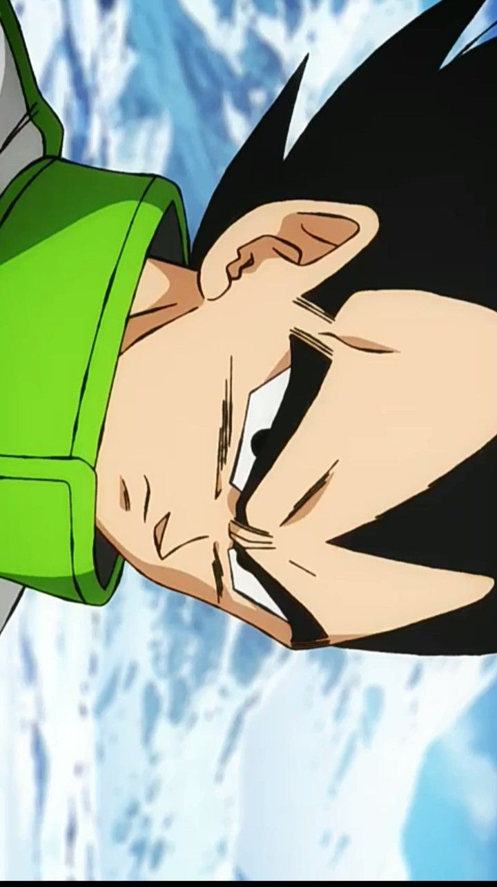
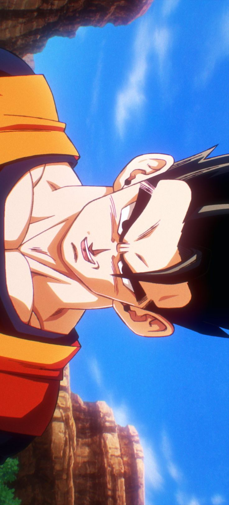
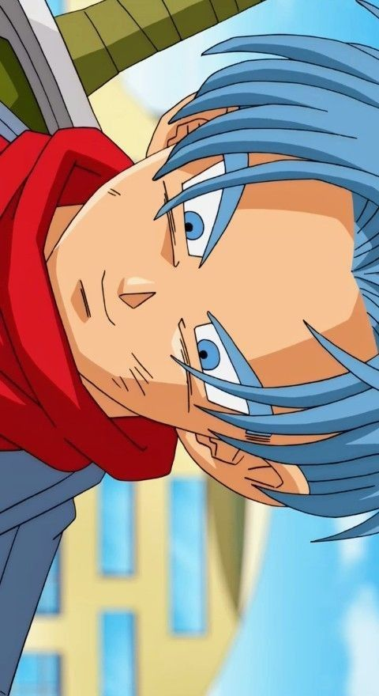
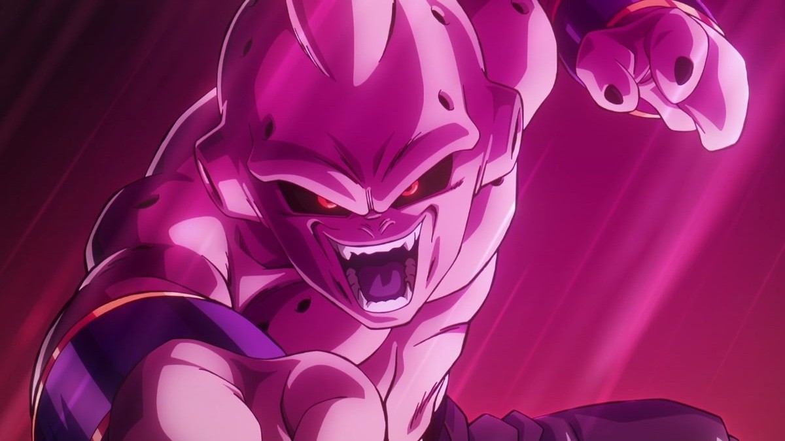

Goku
Goku é apresentado como um Saiyajin de coração puro que busca se tornar cada vez mais forte. Ele vive para desafios e trata até inimigos como oportunidades de evolução. Seu senso de justiça o coloca sempre na linha de frente quando a Terra está em perigo.

Vegeta
Vegeta é descrito como o príncipe orgulhoso dos Saiyajins, movido pelo desejo de superar Goku. Com o tempo, ele deixa o papel de antagonista e se torna um protetor da Terra, mantendo sempre sua postura séria e seu espírito competitivo.

Gohan
Gohan é mostrado como o filho mais velho de Goku, conhecido por um potencial oculto enorme. Embora prefira a paz, ele desperta forças impressionantes quando aqueles que ama correm perigo, revelando um dos poderes mais elevados da série.

Piccolo
Piccolo é retratado como um guerreiro Namekuseijin disciplinado, que evolui de rival de Goku para um mentor fundamental de Gohan. Ele valoriza estratégia, treinamento rigoroso e demonstra grande lealdade aos seus aliados.

Trunks
Trunks é apresentado como o filho de Vegeta e Bulma, conhecido por viajar no tempo para impedir futuros desastres. Ele carrega um forte senso de responsabilidade e mostra determinação ao tentar garantir um futuro seguro para todos.

Majin Boo
Majin Boo aparece como uma criatura poderosa e instável, capaz de alternar entre comportamentos infantis e extrema destruição. Conforme interage com pessoas bondosas, ele muda gradualmente, revelando um lado mais pacífico e controlado.